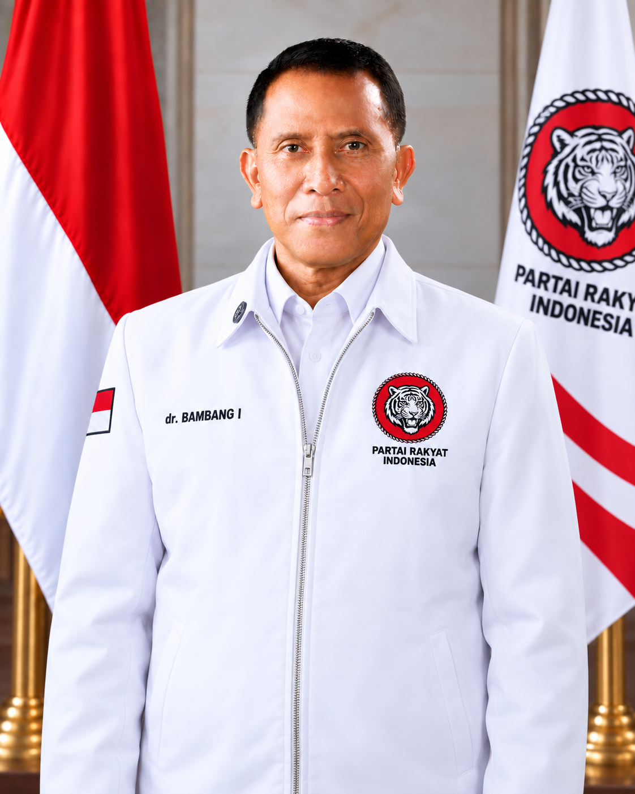

Partai Rakyat Indonesia
Ketua DPD Partai Rakyat Indonesia
Provinsi Jawa Barat
Tokoh Jawa Barat dengan pengalaman kepemimpinan, pengabdian, dan komitmen untuk membangun ruang aspirasi masyarakat. Latar belakang profesional dan pengabdiannya menjadi fondasi dalam menjalankan peran sebagai Ketua DPD Partai Rakyat Indonesia Provinsi Jawa Barat.
Peran Saat Ini
Sebagai Ketua DPD Partai Rakyat Indonesia Provinsi Jawa Barat, Mayjen TNI Purn dr. S. Bambang Indrasto berfokus pada penguatan komunikasi, penyerapan aspirasi, dan membangun hubungan yang lebih dekat dengan masyarakat Jawa Barat.
Menampung dan menyuarakan aspirasi masyarakat
Membangun komunikasi dengan masyarakat Jawa Barat
Mendekatkan organisasi dengan warga akar rumput
Membangun hubungan dan solidaritas masyarakat
Pengabdian Sebelumnya
Pengalaman dan latar belakang profesional, kepemimpinan, serta pengabdian kepada masyarakat yang menjadi fondasi perjalanan beliau.
Pengalaman
Kepemimpinan Strategis
Bidang
Kesehatan & Manajemen
Mayjen TNI Purn dr. S. Bambang Indrasto, Sp.M., S.H., M.M. memiliki latar belakang yang kuat dalam bidang kesehatan, kepemimpinan, dan pengabdian kepada masyarakat. Dengan keahlian khususnya di bidang medis, dedikasi, serta kepemimpinannya, beliau telah dipercaya mengemban berbagai posisi strategis dalam institusi kesehatan dan organisasi, termasuk perannya dalam lingkungan Rumah Sakit Pusat Angkatan Darat (RSPAD) Gatot Subroto.
Bagian Riwayat
5 April 2024 — Sekarang
Mengemban amanat dan tugas sebagai Staf Khusus Kepala Staf TNI Angkatan Darat.
2 Oktober 2023 — 5 April 2024
Memimpin Kelompok Staf Ahli di lingkungan RSPAD Gatot Subroto.
2020 — 2023
Bertanggung jawab atas pengawasan internal dalam operasional RSPAD Gatot Subroto.
Sebelum 2020
Mengelola kegiatan pengawasan dan penjaminan mutu dalam tubuh organisasi rumah sakit pusat militer.
Sumber Data: Disarikan secara faktual berdasarkan halaman profil resmi pada ensiklopedia bebas (Wikipedia).